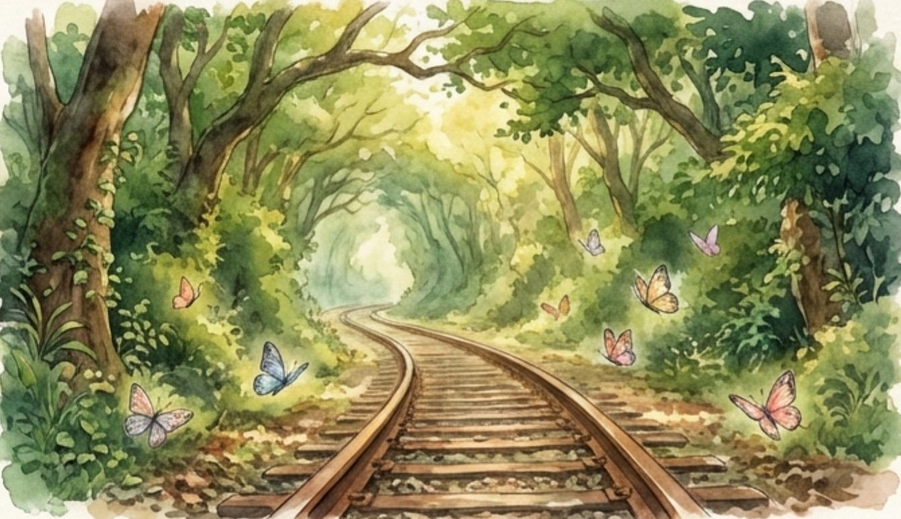
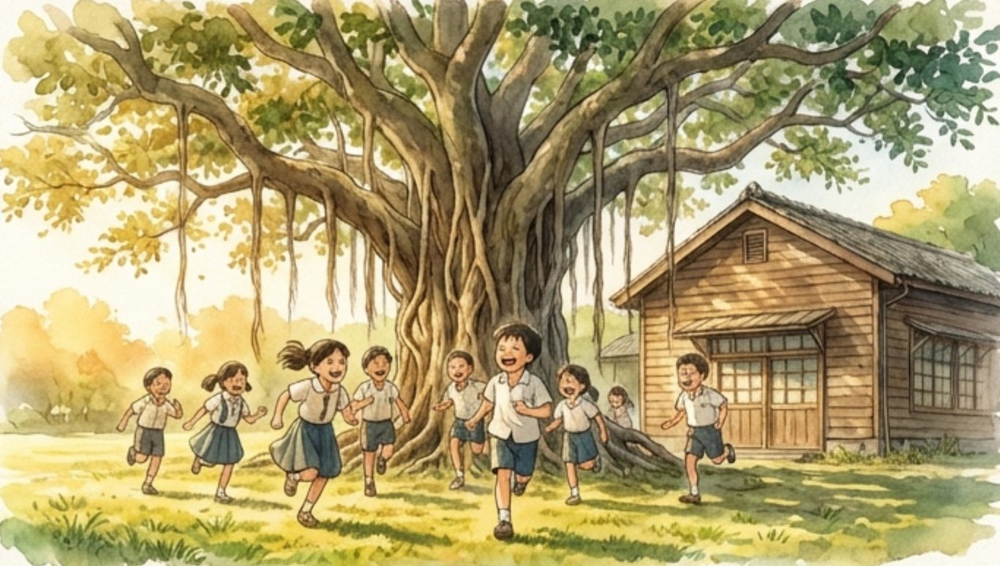
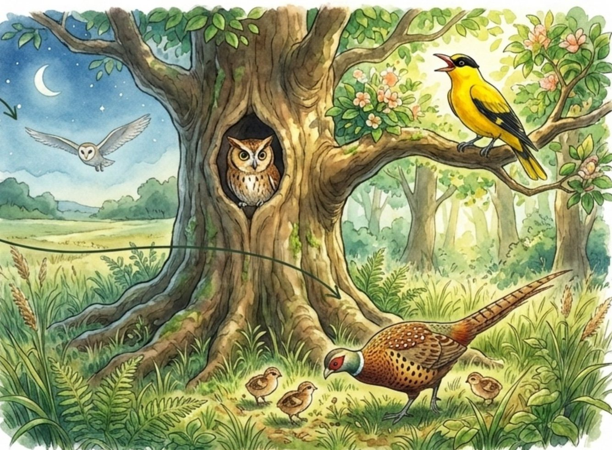
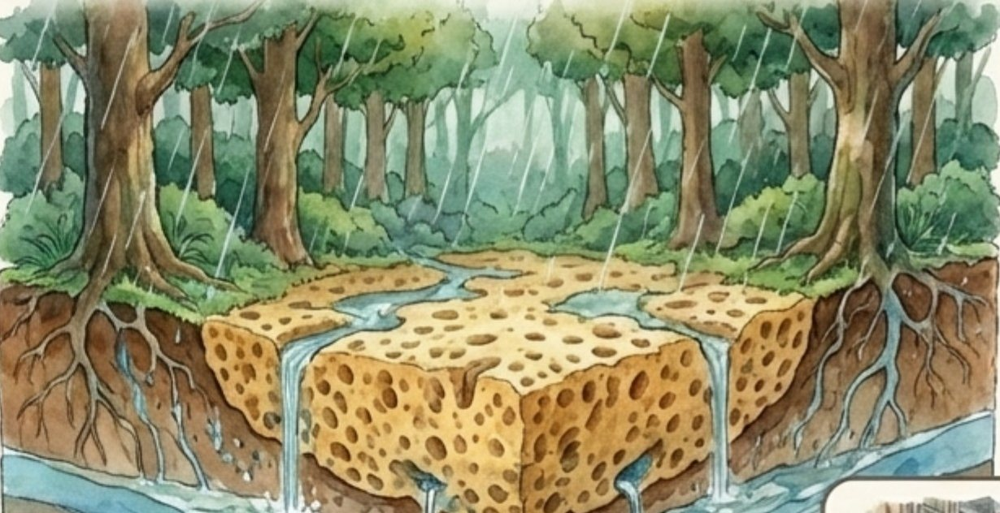
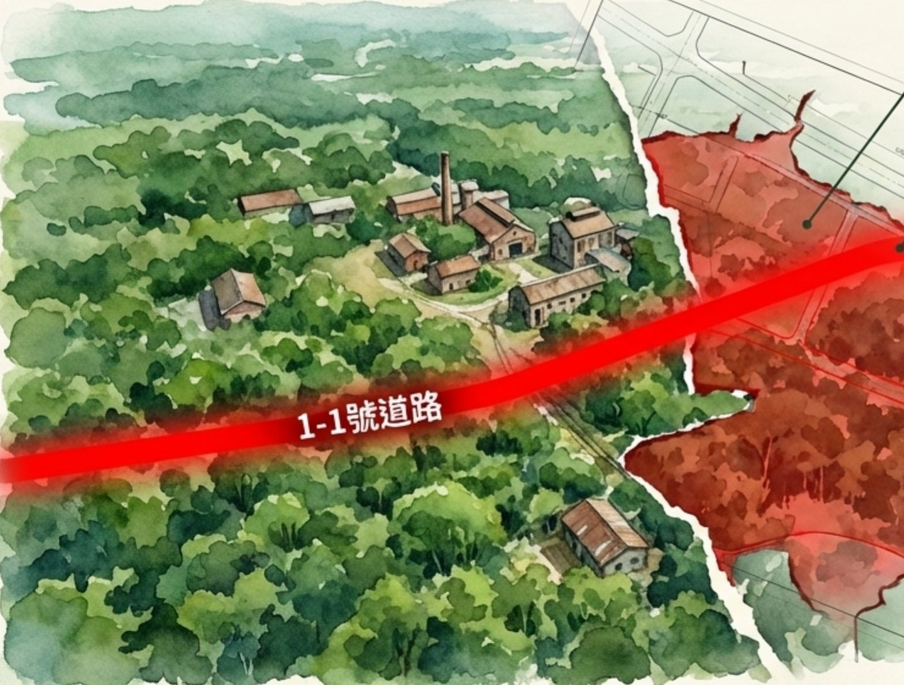
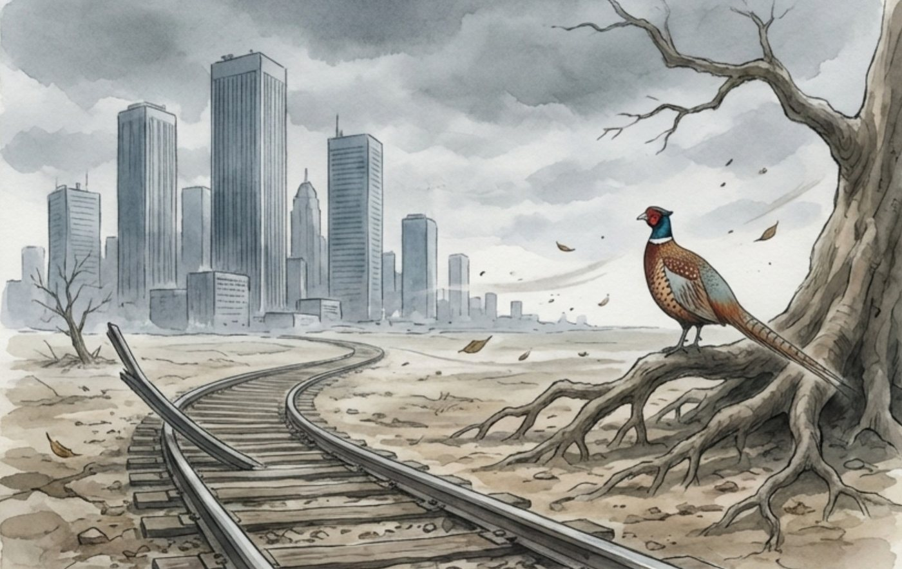
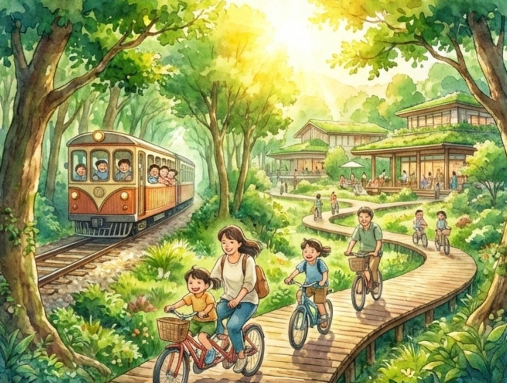

都委會已「原則同意」，但還沒有最後定案
2026/7/21 內政部都委會第 1104 次會議，把第三期計畫修正後原則同意。依程序，修正版還要在地方補辦公開展覽與說明會、接受新的陳情，必要時再開專案小組，最後才核定。另外，環境部表示要依法辦理環評變更，水利署的出流管制計畫也仍在審查。也就是說——現在說話，還來得及。
- 2026/5–6專案小組現勘、公益性及必要性審查
- 2026/7/21都委會大會修正後原則同意
- 現在補辦公展與說明會、環評變更、出流管制審查
- 最快 2027 年底核定後取得土地、展開區段徵收
一輩子在糖廠邊長大的人
沒有政黨、沒有政治背景，她只為一件事參選。
「攏是憨膽啦。」— 蔣黃女談參選，用台語笑自己的傻膽量（聯合報，2026/9/5）
蔣黃女在橋頭糖廠旁長大，年輕時替商行砍甘蔗，後來和先生一起做水泥工。兒子投入糖廠保存與藝術村推動之後，她也跟著走進這片林子，長年擔任環境志工與文化資產推廣志工——哪裡有老樹、哪條是五分車的舊軌道、哪一間是老宿舍，她都熟。
糖廠裡不少樹，是她年輕時看著種下的。得知高雄新市鎮第三期要把這片林地變更為住商用地後，她說參選的理由只有一個：替不會說話的森林發聲。她也說，森林一旦砍了，就再也回不來。
- 姓名
- 蔣黃女（人稱「蔣媽」「森林阿嬤」）
- 年齡
- 83 歲，本屆高雄最高齡議員參選人
- 參選
- 高雄市議員・第三選區
- 選區
- 岡山、橋頭、燕巢、梓官、彌陀、永安
- 黨籍
- 無黨籍，首次參選
- 登記
- 2026/9/4 完成登記
- 號次
- 10/23 抽籤決定（公布後更新）
- 投票日
- 2026/11/28（六）
- 後援
- 全台逾 70 個環保團體組成後援會；逾 5,000 人連署搶救森林
從一支影片，到凱道上的生日願望
2025 年底我做那支影片時，事情還在醞釀。十個月後，它已成了全台環團關注的議題。
- 2025/12
製作影片〈拯救百年橋頭森林〉，整理第三期開發計畫與替代方案。
- 2025/8
在地志工與團體發起「搶救橋頭糖廠百頃森林」運動。
- 2026/1/7
環團提出「新 1-1」替代路線：改走既有道路、直接銜接青埔站，宣稱可保留百公頃森林與糖廠，並少徵收私有地。
- 2026/3
橋頭 17 位里長公開表態支持道路開發，批評環團阻礙發展；環團與里長在說明場合爆發口角。
- 2026/5/18
新市鎮三期第四次會議於橋頭區公所召開，焦點是 60 米寬「1-1 道路」是否照原規劃貫穿林地，雙方未達共識；5/18–22 都委會密集現勘與專案小組會議。
- 2026/6/24
開發案進行公益性及必要性審查。
- 2026 年中
護樹團體揭露區段徵收審議小組主席同時擔任台糖獨立董事，批「球員兼裁判」；國土署回應該委員已依規請假迴避。
- 2026/7/6
環團要求重啟完整環評，批評以「環差分析」切割闖關；環境部長彭啓明表示依法審查，與原環評承諾不同就須辦理變更。
- 2026/7/21
都委會第 1104 次大會修正後原則同意：部分道路改為綠園道、規劃約 21 公頃公園兼滯洪池；會議限制媒體與民眾旁聽引發爭議。民團帶著 4,000 人連署在場外抗議。修正版仍須補辦公展、說明會後才核定，最快 2027 年底展開區段徵收。
- 2026/9/4
蔣黃女在兒子與森林城市協會陪同下，登記參選高雄市議員第三選區。
- 2026/9/30
全台逾 70 個環團在糖廠成立後援會，大潭藻礁搶救聯盟潘忠政到場聲援。
- 2026/10/10
83 歲生日當天，森林阿嬤到凱達格蘭大道許願，請賴總統調整計畫：60 米道路改道、縮小開發範圍，把約 154 公頃國有林地規劃為「國家都市森林示範區」。
- 2026/10/23
議員候選人號次抽籤。
- 2026/11/28
地方公職人員選舉投票日。
我們的森林，你們的記憶影片 2025/12
百年糖廠的工業遺址，和自己長出來的次生林，在這裡共生了半個世紀。

五分車與次生林
五分車鐵軌、廠房、宿舍、學校串成「廠、住、校一體」的文化地景，是高雄北部的都市之肺。

孩子的自然教室
緊鄰林地的興糖國小，以「藝術與生態」環境教育聞名，森林就是孩子們的教室。

萬物的家園
草鴞、環頸雉、黃鸝等保育類鳥類，還有螢火蟲，棲息在超過十萬棵樹組成的林子裡，串起半屏山與典寶溪。
森林，是擋住河水的海綿
這片林地緊鄰典寶溪，是天然的洪泛空間。護樹團體估算它能吸收約 175 萬噸洪水，相當於 9 座寶業滯洪池。計畫若將土地填高約 1.6 米，水就得往別處去——凱米（2024）與康芮（2025）颱風時，楠梓、橋頭都曾嚴重淹水。
官方的修正版在典寶溪沿岸規劃約 20 公頃公園兼滯洪池，以 10 年重現期距設計，吸納開發後增加的逕流。但逢甲大學學者在公視《我們的島》指出：現行規劃只處理基地內的逕流，沒有做到整個河川系統的調控。
175 萬噸為護樹團體與影片製作時（2025/12）的估算。

一道將撕裂大地的傷疤已更新至 2026/10
高雄新市鎮後期發展區（第三期）

計畫要開闢一條 60 米寬的「1-1 號道路」，橫向穿過糖廠森林與文化區，腰斬五分車軌道，並經過興糖國小門口；捷運紫線也將切過林地。原本的台糖林地，大多將變更為住商建地。
2026/7 通過的修正版，把部分道路改成綠園道，並把平地造林地改為約 21 公頃公園兼滯洪池；但 1-1 道路仍是串聯一至四期的主要幹道，護樹團體的改道訴求並未被採納。
官方的理由，是半導體 S 廊帶帶來的住宅需求與在地交通。但影片裡我問過：依台積電廠區員工推估，真實新增的住房需求有那麼大嗎？（官方說法約 1 萬戶，影片當時推估約 4,000–8,000 戶）一、二期仍有大片閒置土地，橋頭周邊也有上萬間空屋。
為什麼有人想開路，有人想留樹
支持開發的聲音也來自在地，值得被認真聽見。
支持開發
- 橋頭長年被糖廠用地包圍，發展受限；里長形容「提早 55 分鐘出門還是塞車」。
- 里長聯誼會認為新市鎮是「百年一遇的翻轉機會」，開發難免移植部分樹木。
- 國土署：方案已大幅修正，未來依樹木保護規定，在公園兼滯洪池廣植喬木。
- 台糖與農業部確認：糖廠林木屬於「短期人工經濟造林」，不是天然林。也有專欄認為，這和台北行道樹爭議性質不同，應聚焦保留多少綠地與生態補償，而非「亂砍樹」口號。
守護森林
- 高雄人口連續近十年下滑、周邊近 400 公頃土地可規劃，為何非砍森林不可？
- 60 米道路經過國小門口，學童通學安全堪慮；洪患風險上升。
- 人工林也已長成數十年的次生林，8 種保育類鳥類與螢火蟲在此棲息。
- 「左手都市林、右手毀森林」——與總統的都市林政策矛盾；審查程序也有利益迴避疑慮。
市府與市長候選人的立場
開發權責在中央的內政部國土署，但市府與下一任市長，都是這件事的關鍵角色。以下整理公開發言，不代表完整政見。
配合中央，強調「兼顧」
陳其邁表示開發權責在國土署，市府會把地方意見提供參考，「兼顧環境永續和橋頭地區發展」（2026/3）。都委會通過後市府說明：1-1、1-2 號道路是串聯新市鎮一至四期的交通廊道；劃設約 21 公頃糖廠文化景觀保存區、19 公頃觀光專用區、約 21 公頃公園兼滯洪池；樹木保留 195 株、移植 357 株、新植 8,253 株。
背景：2020 年陳其邁任行政院副院長時，宣布重啟「橋頭新市鎮」並開發橋頭科學園區。
「森林最大限度保留應是首要考量」
柯志恩說，百公頃森林是北高雄的地理標誌、氣候調節與生態多樣性的命脈，森林的最大限度保留應成為開發計畫的首要考量，而非犧牲對象；同時指出權責在國土署，盼在永續與地方需求間取得最好的平衡。尚未明確表態是否支持道路改道。
「納入環境永續評估，取得平衡」
賴瑞隆表示推動新市鎮開發時應納入環境永續發展評估，持續關注國土署依審查程序，優先研議兼顧地方發展及環境的可行方案。未明確表態支持或反對現行方案。
張靜、王肇民、洪方隆
高雄市長共 5 人登記參選。司法改革黨張靜，以及無黨籍王肇民、洪方隆，目前查無針對本案的公開表態。
砍不砍樹之外，真正該問的三件事
「砍樹 vs. 不砍」是被簡化的說法。把各方說法攤開來看，爭議其實落在這三個問題上。
需求是真的嗎？
官方說需要約 1 萬戶，影片當時推估約 4,000–8,000 戶，差距將近一倍。估算依據有公開嗎？
綠地該變成誰的資產？
國營事業的造林地，透過區段徵收變成高價建地。這是全台平地造林屆期後都會遇到的問題。
路非走那裡不可嗎？
環團提出「新 1-1」改道方案，修正版未採納，官方也還沒公開說明兩案比較。
1這片「森林」到底是什麼？
糖廠本身：1901 年啟用，是台灣第一座現代化機械製糖廠，園區約 25 公頃，有百年建築與五分車鐵道。
周邊的林子：原本是蔗田。台糖自 2002 年起配合政府「平地造林」政策種樹，獎勵補助期限 20 年，現已屆期。2021 年農業部把台糖造林地分成三類：具生態價值的保留、適合農業的恢復耕作或做農電共生、地力不佳的設太陽光電。也就是說，這些樹本來就站在「補助到期後怎麼辦」的十字路口。
兩邊都說對了一部分：台糖說這是「經濟造林，不是原始森林」——沒錯；但長了二十多年，已成為 8 種保育類鳥類與螢火蟲的棲地——也是事實。
面積為什麼差這麼多：台糖說徵收範圍內的人造林約 51 公頃；護樹團體說「百頃」、主張保留約 154 公頃國有林地。差別在於只算徵收範圍，還是糖廠周邊所有林地。
2新市鎮為什麼要開發第三期？
歷史包袱：高雄新市鎮是 1988 年為興建中低收入住宅而規劃、1994 年公告。第一期開發 338 公頃，到 2020 年只引進約 8 千人，遠低於原定 24 萬人的目標，立法院預算評估也點名「引進人口數偏低」。目標人口後來下修到 17 萬人。
這次的理由：橋頭科學園區已啟用，核准 26 家廠商進駐，全面營運後預估約 1.1 萬個就業機會，加上半導體 S 廊帶，官方據此估算住宅需求。
反方質疑：第一期仍有約 80 公頃住商用地閒置；環團稱周邊空屋逾 13 萬戶；高雄人口連續近十年下滑。
3錢的問題：區段徵收怎麼運作？
區段徵收是政府把整片土地收回、重新規劃道路與公園後，按比例發還一部分建地給原地主（稱「抵價地」）。
- 第三期約 219–226 公頃，台糖與台灣糖業協會土地占 102–163 公頃（各報導數字不同），是最大地主。
- 台糖將領回約 40.72 公頃建地。
- 環團估算台糖獲利 300–555 億元（以鄰近建地每坪約 18 萬元 × 102 公頃計）。
- 台糖回應：只領回 40.72 公頃、採「只租不售」、還要負擔高額地價稅，「絕無大賺 500 億」。
結構性的問題：國營事業的綠地一經都市計畫變更，就成為高價建地；若改劃公園，這筆價值就不存在。這也是審查委員兼台糖獨立董事會引發強烈爭議的原因（國土署表示該委員已請假迴避）。
41-1 道路為什麼要走那裡？
官方理由：1-1 道路是串聯新市鎮一至四期、銜接交流道的主要幹道；橋頭長期塞車，里長形容「提早 55 分鐘出門還是塞」。
替代方案：2026/1 環團提出「新 1-1」，改走既有道路、從興糖國小南側經過、直接銜接青埔站，宣稱路程更短、徵收私有地更少，又能保留森林。
現況：7 月通過的修正版沒有採納改道，官方也還沒公開說明不採納的理由——這是目前最大的資訊缺口之一。
5淹水風險：滯洪池夠不夠？
修正版在典寶溪旁規劃約 20 公頃公園兼滯洪池，以「10 年重現期距」設計，吸納開發後增加的逕流。
逢甲大學曾梓峰教授在公視《我們的島》指出：現行規劃只處理基地內的逕流，沒有做到整個河川系統的調控。凱米（2024）、康芮（2025）颱風時，楠梓、橋頭都曾嚴重淹水。水利署的出流管制計畫仍在審查中。
6各方要的是什麼？
| 角色 | 要什麼 | 主要論點 |
|---|---|---|
| 國土署（主辦） | 照修正版推動 | 支援半導體、解決交通、已劃文化景觀保存區 |
| 台糖（最大地主） | 領回建地、活化資產 | 經濟造林非原始林、只租不售 |
| 高雄市府 | 樂觀其成 | 權責在中央、兼顧發展與環境 |
| 橋頭里長 | 加速開發 | 被糖廠用地包圍數十年，翻轉機會 |
| 護樹團體／森林阿嬤 | 保留林地、道路改道 | 需求被誇大、淹水、生態、程序不公 |
| 市長候選人 | 都說「平衡」 | 皆未明確承諾改道 |
還缺的三份資料
只要這三份資料公開，爭議會清楚很多。這也是最實際、最不分立場的要求。
到底有多少樹、樹種與胸徑分布？
不只基地內，整條典寶溪的淹水風險變化。
交通效益、徵收成本、生態衝擊並列。
是短期的土地利益，還是永續的生態價值？影片 2025/12＋2026 補充
我們的選擇，將決定這片土地的百年命運。

鋼鐵之路：照現行方案
- 文化斷裂：百年五分車軌道被腰斬，廠、住、校一體的歷史紋理破碎。
- 生態浩劫：保育類失去家園，都市熱島加劇。
- 經濟風險：日後的洪災修復成本，可能遠超一次性的土地收益。

生命之路：更聰明的做法
- 道路改道：影片當時提出繞至外圍（如 1-3 號道路、國道邊坡）。2026 年環團具體提出「新 1-1」路線：利用既有道路、改線到興糖國小南側並直接銜接青埔站；森林阿嬤也在凱道提出同樣訴求。
- 容積轉移：把開發需求導向一、二期已規劃的閒置區。
- 森林文化公園：仿明治神宮、溪頭，打造「國家都市森林示範區」，影片當時（2025/12）估算每年可創造約 34 億元觀光產值。
👁 要求透明
公開 GIS 水文模擬數據，讓所有人看見開發前後的淹水風險變化。
💬 要求辯證
建立公開協商平台，共同評估道路改道與森林文化公園等替代方案。
⚖️ 要求公正
委託第三方獨立審計，重新評估開發案真實的經濟與環境效益，並落實利益迴避。
你的聲音，就是森林的回音
不必住在橋頭，也能幫上忙。
把這頁傳給一個人
很多人不知道高雄正有一座百年森林可能消失。分享，是最簡單也最有效的事。
第三選區的朋友：11/28 去投票
如果你或家人的戶籍在岡山、橋頭、燕巢、梓官、彌陀、永安，認識一下這位 83 歲、只為森林參選的候選人。號次 10/23 抽籤後公布。
關注公共事務
追蹤森林城市協會等護樹團體的行動、連署與說明會，在都委會與環評程序中持續發聲。
聽，森林的低語
這個網頁改寫自我在 2025 年 12 月製作的影片〈拯救百年橋頭森林〉。
樹砍了，要再等一百年。
森林會記住我們的選擇。
一同守護我們的未來。
資料來源
- 聯合報〈「憨膽啦」83歲蔣黃女披戰袍 為守護橋頭糖廠森林拚議員〉2026/9/5
- 自由時報〈守護橋頭森林 83歲蔣黃女登記參選高雄市議員〉2026/9/4
- 聯合報〈83歲蔣黃女披戰袍守護橋頭糖廠林地 全台環團聲援組織後援會力挺〉2026/9/30
- 聯合報〈83歲「蔣媽」護樹選高市議員 逾70環團聲援〉2026/10/1
- 聯合報〈83歲「森林阿嬤」上凱道 籲賴總統勿砍橋頭糖廠10萬棵樹〉2026/10/10
- 聯合報〈影／83歲「森林阿嬤」蔣黃女 盼望搶救橋頭糖廠10萬棵老樹〉2026/10/10
- 聯合報〈民團抗議高雄新市鎮開發恐砍百公頃森林 國土署回應了〉2026/7/21
- 聯合報〈橋頭糖廠森林開發案惹議！環團籲重啟環評 彭啓明：依法審查〉2026/7/6
- 公視新聞〈橋頭新市鎮3期召開第四次會議 道路將貫穿林地引正反論戰〉2026/5/18
- 上下游〈橋頭糖廠百頃開發爭議，民團控審查主席身兼台糖獨董〉
- 中時〈愛樹不愛人？橋頭17里長挺道路開發〉2026/3/16
- 聯合報〈橋頭新市鎮開發毀糖廠百頃森林 柯志恩、賴瑞隆回應〉2026/3/11
- 聯合報〈闢路vs.森林 柯志恩賴瑞隆都喊永續平衡〉2026/5/19
- LINE TODAY〈高雄新市鎮三期開發案過關！橋仔頭糖廠21公頃完整保留 市府火線回應了〉
- 大紀元〈下屆高雄市長5人登記參選〉2026/9/5
- 中時〈高雄市長首場辯論敲定！柯志恩、賴瑞隆同台交鋒〉2026/10/11
- 台灣森林城市協會〈十月橋頭糖廠森林小旅行〉
- 中央社〈內政部都委會通過高雄新市鎮三期案 兼顧發展與生態〉2026/7/21
- 公視我們的島〈高雄新市鎮第三期開發案修正後通過都委會審議〉2026/7/21
- 公視我們的島〈衝突中找解方—高雄新市鎮第三期開發爭議紀實〉
- 自由時報〈環團提「新1-1」取代「舊1-1」道路〉2026/1/7
- 芋傳媒《農藝女孩專欄》〈橋頭糖廠砍樹爭議，不能和台北行道樹混為一談〉2026/9/21
- 聯合報〈高雄橋頭新市鎮3期開發 遭質疑毀糖廠森林〉（台糖：人造林約51公頃）
- 風傳媒〈環團抗議橋頭糖廠「百頃森林變建地」 台糖回應了：原本就是造林〉2026/6/15
- 立法院〈高雄新市鎮開發引進人口數偏低〉預算評估
- 台糖〈平地造林屆期後資源利用規劃〉
- CTWANT〈高雄新市鎮第三期開發案爭議 台糖5點聲明澄清〉2026/6/15
- 經濟日報〈高雄新市鎮3期24日開土徵大會 環團籲排除台糖綠地〉
- 公視我們的島〈該如何看待高雄新市鎮三期的發展？ft.曾梓峰〉
- 自由時報地產天下〈橋科正式啟用 將創1.1萬就業機會〉
- 報導者〈那些長不大的樹──平地造林20年〉
- 公視我們的島〈誰來決定新市鎮：橋頭開發與糖業鐵道歷史〉
插圖取自原始影片簡報（NotebookLM 生成）與 AI 水彩插畫，皆為示意。本頁為個人整理的公民倡議頁面，非候選人官方網站。資料更新至 2026/10/11。